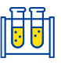
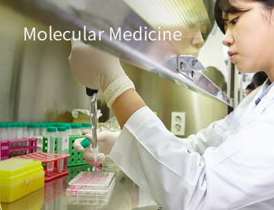
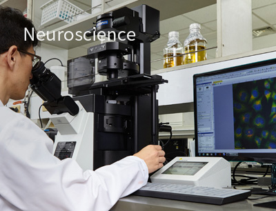
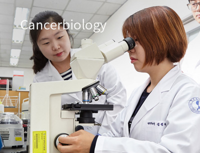
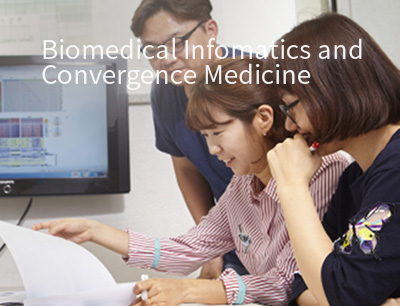

전공소개
의생명과학과는 세계 바이오 연구분야를 선도합니다.
- 분자의학전공
- 
Molecular Medicine
유전자의 구조, 발현 기전 및 조절 메커니즘을 이해하고, 이를 바탕으로 질병의 근본적인 개념, 발병 기전 및 치료의 원리를 이해하도록 하는 전공과정 프로그램
- 교육분야
- 병원체의 분자생물학, 생화학, 조직학, 면역학, 의학유전학적 접근을 통해 기존의 의생명과학 기초 지식 및 유전자 수준의 시스템 생물학, 병태생리, 전임상, 임상시험, 임상의학 등 응용 의생명과학 지식 형성
- 전공필수(핵심) 교과목
- Immunology, Molecular and Cellular Biology
- 책임교수
- 미생물학교실 김유선 교수 yousunkim@ajou.ac.kr
전공교수진 바로가기

- 신경과학전공
Neuroscience
세포 및 분자 수준에서부터 시스템뇌과학까지 신경과학의 거의 전 분야를 포함할 수 있는 선도적인 전공과정 프로그램. 신경과학 분야의 기초연구가 임상으로 이어지는 중개연구에 대한 실질적 교육 수행
- 교육분야
- 분자 및 세포 신경생물학, 신경계의 구조 및 발생, 신경생리학 등 신경과학의 핵심전공지식 및 신경계 질환의 발병기전 및 치료의 원리를 이해할 수 있는 의생명과학적 지식분야
- 전공필수(핵심) 교과목
- Molecular and Cellular Neuroscience I, 신경계의 구조 및 발생
- 책임교수
- 약리학교실 박상면 교수 sangmyun@ajou.ac.kr
전공교수진 바로가기

- 종양생물학전공
Cancerbiology
암의 병태생리학과 분자생물학, 그리고 세포 생물학 연구의 기초를 탐구하는 전공과정 프로그램
- 교육분야
- 세포의 노화, 간의 암화, 종양관련시스템 생물학, 세포 주기와 유전체의 불안정성, 미토콘드리아역학, 단백질의 정성적 조절, 그리고 다양한 세포사멸기전 등을 아우르는 전공분야
- 전공필수(핵심) 교과목
- 종양생물학개론 I, II
- 책임교수
- 생화학교실 박태준 교수 park64@ajou.ac.kr
전공교수진 바로가기

- 의생명정보 및
융합의학 전공
Biomedical Infomatics and Convergence Medicine
의생명정보학, 나노융합기술, 유전체의학, 재생의학, 임상적 활용을 위한 중개의학 등의 통합 및 협동연구를 통한 시스템 수준의 의생명연구를 중점적으로 교육하는 프로그램
- 교육분야
- 임상의학과 기초 바이오·의료 분야의 의료 정보 수집과 처리 및 응용에 관한 정보학적 이론, 정보·지식 공학적 방법론, 임상의학 및 기초의과학적 응용을 위한 통합 교육. 유전체 분야 기본적인 지식 및 임상자료를 활용한 유전체 연구에 필요한 기본 소양을 교육
- 전공필수(핵심) 교과목
- 의료정보학 개론 I, II, 유전체의학, 생물정보학
- 책임교수
- 생화학교실 우현구 교수 hg@ajou.ac.kr
전공교수진 바로가기

- 의약학전공
Pharmacotherapeutics
의과학 기초 연구역량을 바탕으로 의약개발 연구를 수행할 수 있는 융합적 사고 및 다학제적 연구역량을 갖춘 미래 인재를 양성
- 교육분야
- 질환기전, 질환치료, 의약개발, 진단 및 치료제 개발 과정 교육
- 전공필수(핵심) 교과목
- 의약학개론 I, II
- 책임교수
- 약학과 전상민 교수 smjeon@ajou.ac.kr
- 의료인공지능학 전공
Artificial Intelligence in Medicine
- 보건복지부/교육부 의료인공지능 융합인재양성사업의 일환으로 의료, 유전체, 신약 분야의 인공지능 활용기술 역량을 갖춘 인재 양성
- 의과대학, 소프트웨어융합대학, 공과대학, 자연대학, 약학대학 등 5개 단과대학 소속 교수들이 공동 참여하는 다학제적 융합인재양성 프로그램
- 학부 마이크로과정 및 대학원 전공 과정을 개설하여 학석사 연계형 프로그램 개발
- 교육분야
- 의료인공지능의 주요 활용분야로 의료, 유전체, 신약 분야
- 전공필수(핵심) 교과목
- 의료인공지능, 의료인공지능 실습, 의과학의 이해
- 책임교수
- 생리학교실 우현구 교수 hg@ajou.ac.kr